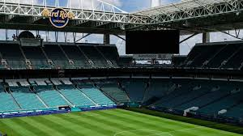
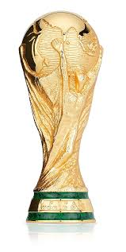
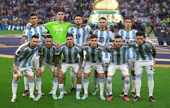

A Copa do Mundo de 2026 será a maior da história, com 48 seleções participantes.
O torneio será realizado em três países: Estados Unidos, Canadá e México.
Será uma competição com mais jogos, mais emoção e novas estrelas do futebol mundial.


🇦🇷 História da Argentina nas Copas
A Argentina é uma das seleções mais vitoriosas da história do futebol mundial.
A melhor copa do mundo da Argentina
A seleção argentina tem três estrelas sobre seu escudo, todas com um significado especial e muito simbolismo.
A primeira, em 1978, foi conquistada como anfitriã do torneio. A equipe treinada por César Luis Menotti tinha uma estrutura de jogo definida
e Mario Kempes como seu craque principal. Em 1986, sob as ordens de Carlos Salvador Bilardo, teve Diego Armando Maradona
como sua figura inesquecível. Em 2022, com Scaloni no comando, foi uma vez de Lionel Messi.
A última copa do mundo da Argentina
Tudo deu certo para a seleção argentina no Catar. Até mesmo a derrota na estreia para a Arábia Saudita pareceu ajudar os jogadores
que venceram a competição no banco, como Julián Álvarez e Enzo Fernández, a conquistarem um lugar na equipe.
Depois, houve uma redenção com uma vitória sobre o México e uma confirmação contra a Polônia.
A partir das oitavas de final, a equipa se destacou, embora sempre com uma parcela de sofrimento, com vitórias contra Austrália (2 a 1),
Holanda (2 a 2 e uma loucura nos pênaltis), Croácia (3 a 0) e França (3 a 3 e, novamente, sorte nos pênaltis).
A primeira copa mundo da Argentina
A Argentina foi protagonista da Copa do Mundo da FIFA desde a sua criação, como um dos 13 participantes do torneio inaugural.
Depois de um desempenho brilhante no solo uruguaio, chegou à final contra o rival rioplatense em uma partida que começou vencendo
e acabou perdendo por 4 a 2. Gustavo Stábile foi o grande nome da equipe, com oito gols.
🏆 1978 - Primeiro título jogando em casa
🏆 1986 - Campeã com atuação histórica
🥈 1990 - Vice-campeã
🥈 2014 - Vice após final disputada
🏆 2022 - Campeã com campanha incrível

Destaque
A Argentina conquistou a Copa de 2022 com uma campanha histórica.